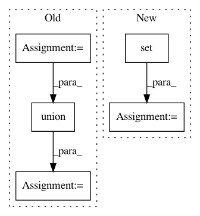

07c8aa3fd65c2b943785b588233d7ab4bf7093c0,rasa/shared/data.py,,,#,8
Before Change
from pathlib import Path
from typing import Text, Optional, Union, List, Tuple, Callable, Set, Iterable
YAML_FILE_EXTENSIONS = {".yml", ".yaml"}
JSON_FILE_EXTENSIONS = {".json"}
MARKDOWN_FILE_EXTENSIONS = {".md"}
TRAINING_DATA_EXTENSIONS = JSON_FILE_EXTENSIONS.union(MARKDOWN_FILE_EXTENSIONS).union(
YAML_FILE_EXTENSIONS
)
def is_likely_yaml_file(file_path: Text) -> bool:
Check if a file likely contains yaml.
After Change
YAML_FILE_EXTENSIONS = [".yml", ".yaml"]
JSON_FILE_EXTENSIONS = [".json"]
MARKDOWN_FILE_EXTENSIONS = [".md"]
TRAINING_DATA_EXTENSIONS = set(
JSON_FILE_EXTENSIONS + MARKDOWN_FILE_EXTENSIONS + YAML_FILE_EXTENSIONS
)
def markdown_file_extension() -> Text:
Return Markdown file extension
In pattern: SUPERPATTERN
Frequency: 3
Non-data size: 5
Instances
Project Name: RasaHQ/rasa
Commit Name: 07c8aa3fd65c2b943785b588233d7ab4bf7093c0
Time: 2020-09-14
Author: a.khizov@rasa.com
File Name: rasa/shared/data.py
Class Name:
Method Name:
Project Name: pantsbuild/pants
Commit Name: 0f8018d2faf40cc31d54287dc4a1868bb13be9f5
Time: 2013-07-04
Author: benjy@foursquare.com
File Name: src/python/twitter/pants/tasks/jvm_dependency_cache.py
Class Name: JvmDependencyCache
Method Name: _compute_jardep_contents
Project Name: brian-team/brian2
Commit Name: 8793404ed111969ecbf07d31b5d6f56d94d9d77a
Time: 2013-07-03
Author: marcel.stimberg@ens.fr
File Name: brian2/stateupdaters/exact.py
Class Name:
Method Name: _non_constant_symbols